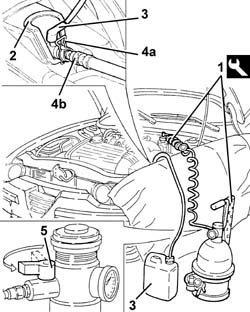

1820B08 Clutch release HYDRAULIC SYSTEM - Bleeding air and restoring level
- Path
- Procedures > 18 CLUTCH > 1820 CLUTCH RELEASE CONTROLS > 1820B HYDRAULIC CLUTCH SYSTEM > 1820B08 Clutch release HYDRAULIC SYSTEM - Bleeding air and restoring level
- Kind
- repair procedure (removal / refitting; the operation number is the code)
- Applies to
- all engines; all production periods
- Interactive page
- https://sloeber94.github.io/elrnDB-a147/en/#/3025109
Applies to: all engines; all production periods
1. Connect the tool to the brake-clutch fluid reservoir.
 | Name | Country |
|---|---|---|
1 | Brake/clutch bleeding equipment | 1.806.097.001 |
2. Open the protective cover
3. Connect the collection system (pipe and reservoir) to the connector on the clutch hydraulic control actuator.
4. Lift retaining clip (4a) until the first click is heard and remove pipe (4b) sufficiently to uncover the bleed hole.
5. Slowly open the fluid reservoir cock.
Wait until all the air contained in the hydraulic clutch disengagement system has come out.
Fit the pipe fully home in its seat on the hydraulic clutch control actuator and secure with the retaining clip.
Close the protective cover.

Applies to: all engines; all production periods
Remove the collection system.
Remove the bleed equipment
| Name | Country |
|---|---|---|
- | Brake/clutch bleeding equipment | 1.806.097.001 |
Check correct clutch disengagement and gear engagement.
Check that the level in the brake-clutch fluid reservoir is correct.
Topics that link to this page (10)
- 0010T67 hydraulic clutch system bleed air
- 1004B10 power unit with manual gearbox - r + r
- 1020D38 flywheel side oil seal - replace
- 1024B10 engine flywheel - r + r for versions with manual gearbox
- 1810A20 clutch - r + r
- 1820B20 (Pump) - MASTER CYLINDER R.R.
- 1820B30 OPERATING CYLINDER/CLUTCH HYDRAULIC ACTUATOR - R.R.
- 1820B46 RIGID supply PIPE from (pump) - master cylinder R.R .
- 1820B58 clutch hydraulic circuit vibration damper - r+r
- 2110A10 manual gearbox and differential - r + r